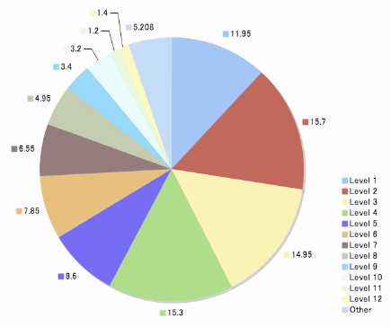

【Memo】単語についている「レベル」って何？
■ 「英辞郎 on the WEB」の検索結果として表示される単語の一部には、レベル という情報が付記されています。「この レベル とは何ですか？」とご質問をいただくこともございますので、これについてご説明いたします。
このレベルは、長年にわたり学習教材・書籍を通じて英語学習者の皆さんをサポートしてきたアルクが、蓄積してきたさまざまな英文データと、多数の貴重な選考資料をもとに、日本人の英語学習者にとって有用であると思われる英語語彙 12,000 語を選び出し、基礎から上級へと 12 のレベルに区分した段階別学習語彙リストに基づくものです。この語彙リストを「標準語彙水準 SVL 12000」（SVL = Standard Vocabulary List）と呼んでいます。
■ 「標準語彙水準 SVL 12000」では、ネイティブスピーカーの「使用頻度」をベースにしながら、日本人学習者にとっての「有用性」、「重要性」を考慮して単語の選定をおこなっています。日本における英語教育の現状を踏まえ、中学生から一般社会人まで、すべての英語学習者が段階を追って効率的に学ぶことができるよう、それらを 1,000 語ずつ 12 のレベルに区分しています。
「標準語彙水準 SVL 12000」には、どんな英文にも登場する最重要の単語が含まれているのはもちろん、一般の単語集であれば最初から除外されたり、省略されがちな単語でありながら、ネイティブスピーカーによって使用される頻度の高いものも多数含まれています。
「標準語彙水準 SVL 12000」ができた経緯については、アルクのサイト内「レベル別語彙リストSVL12000」のページでご覧ください。

■ 右のグラフは、「英辞郎 on the WEB」の英和検索キーワード（英単語）の上位 2000 語を取り出し、その 2000 語のうちどの程度の割合で各レベルの単語が占めているかを集計したものです。円グラフの頂点から時計回りに、レベル 1、2、3 ……と 12 まで進み、SVL に入っていない語彙は最後に "Other" でまとめてグラフ化しています。
ざっとみたところ、Level 1 から Level 5 までの単語で上位 2000 語の 2/3 を占めていることになります。ネイティブスピーカーによって頻繁に使用される単語であり、「英辞郎 on the WEB」をご利用の皆さまからも頻繁に検索されている単語ということは、このレベルの単語群の重要性を裏付けているように判断してもよさそうです。実際にリストを見てみれば、そんなに難しい単語というわけではないものも多いのですが、知っているからこそ「派生表現や例文などを見て活用したい」というモチベーションがこの背景にはあるように思われます。
以下、各レベルの占拠率の一覧です。
- Level 1 （英語の基礎をなす必須単語）: 11.95%
- Level 2 （日常生活で活躍する英単語）: 15.70%
- Level 3 （楽しく会話がはずむ英単語）: 14.95%
- Level 4 （読解の基礎を固める英単語）: 15.30%
- Level 5 （大学受験前に覚える英単語）: 8.60%
- Level 6 （検定試験に挑戦する英単語）: 7.85%
- Level 7 （表現力を豊かにする英単語）: 6.55%
- Level 8 （読解の自信を深める英単語）: 4.95%
- Level 9 （TOEIC高得点を狙う英単語）: 3.40%
- Level 10 （英文雑誌を楽しめる英単語）: 3.20%
- Level 11 （自分の視野を広げる英単語）: 1.20%
- Level 12 （世界をさらに広げる英単語）: 1.40%
- Other : 5.21%